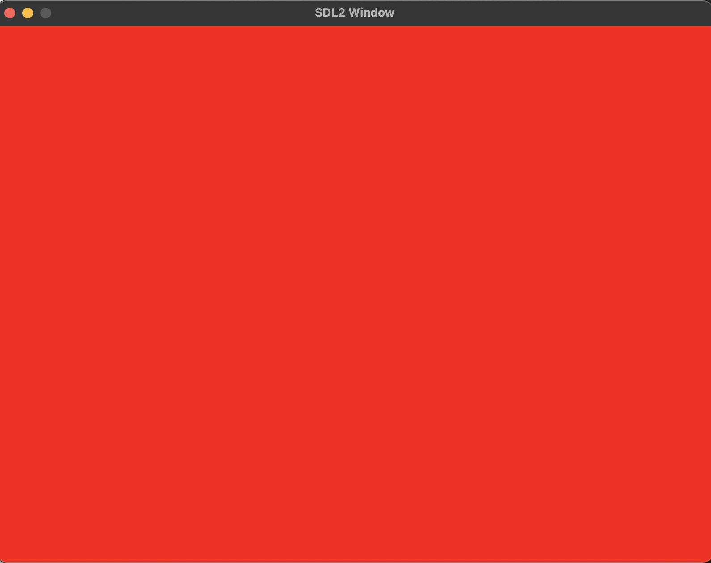
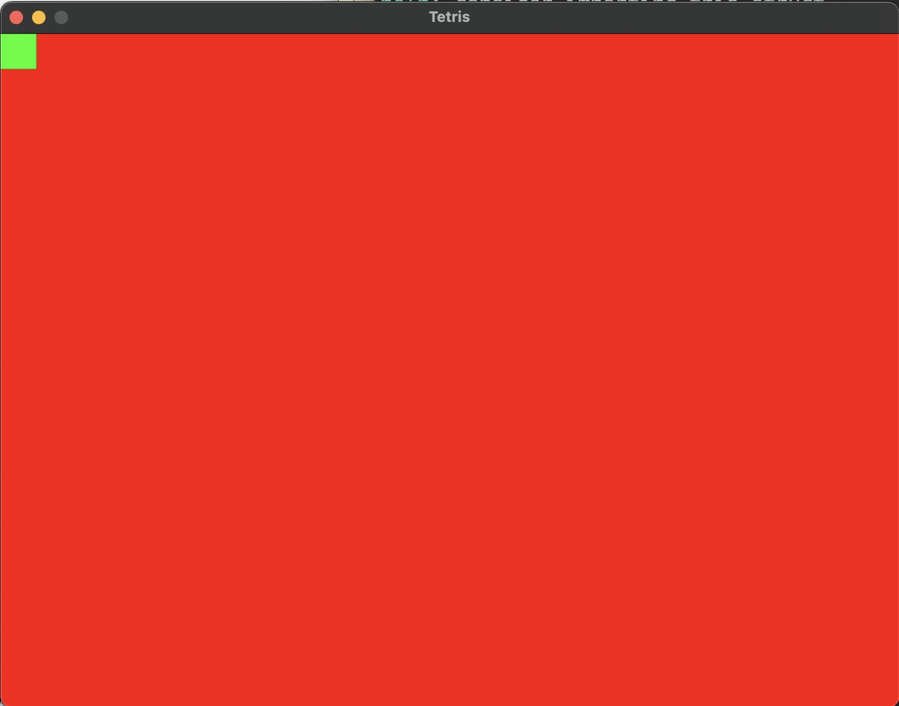

Rust SDL2练习案例
案例来自于Rust Programming by Example,由于按照书籍的操作会存在一些错误，所以用此博客来记录更多的细节。
实验环境
- MacOS M2: 13.5.2
- Rust: 1.70.0
初始化开发环境
- 创建工程
- 添加依赖于
Cargo.toml
- 安装SDL2
- 配置环境变量
此处RUSTFLAGS环境变量的内容需要根据自己的SDL2库的安装路径来配置，由于我的库安装路径是/opt/homebrew/lib下。 执行cargo build编译程序会依赖SDL的动态库；同时我也尝试了其他两种方法并没有成功
其它方法一： 设置环境变量DYLD_LIBRARY_PATH
其它方法二： 在Cargo.toml中添加
- 基础示例代码
extern crate sdl2;
use sdl2::event::Event;
use sdl2::keyboard::Keycode;
use sdl2::pixels::Color;
use std::time::Duration;
fn main() {
// 初始化SDL2
let sdl_context = sdl2::init().unwrap();
let video_subsystem = sdl_context.video().unwrap();
// 创建窗口和画布
let window = video_subsystem
.window("SDL2 Window", 800, 600)
.position_centered()
.build()
.unwrap();
let mut canvas = window.into_canvas().build().expect("Failed to convert window into canvas");
// 渲染代码
canvas.set_draw_color(Color::RGB(255, 0, 0));
canvas.clear();
canvas.present();
// 创建事件处理器
let mut event_pump = sdl_context.event_pump().expect("Failed to get SDL event pump");
// 主循环
'runningloop: loop {
for event in event_pump.poll_iter() {
match event {
Event::Quit { .. } | Event::KeyDown { keycode: Some(Keycode::Escape), .. } => {
break 'runningloop;
}
_ => {}
}
}
// 添加延迟以控制帧率
std::thread::sleep(Duration::new(0, 1_000_000_000u32 / 60));
}
}- 构建程序
- 运行程序
运行结果如下图： 
- 实现过程
导入外部crate SDL2
初始化
SDL context获取
video subsystem创建
windowslet window = video_subsystem.window("Tetris", 800, 600) .position_centered() .opengl() .build() .expect("Failed to create window");- the parameters for the window method
- title
- width
- height
- .position_centered() method
- 在屏幕中间获取窗口
- .opengl()
- 让
SDL使用opengl渲染
- 让
- .build()
- 根据前面提供的参数创建窗口
- .expect()
- 处理异常
- the parameters for the window method
事件循环 正常情况下，展示一个窗口并关闭特别快，我们需要添加时间循环确保窗口一直在运行。
- 导入必要相关的库
use sdl2::event::Event; use sdl2::keyboard::Keycode; use std::thread::sleep; use std::time::Duration;- 获取时间循环管理器
- 创建无限循环循环事件
'running: loop { for event in event_pump.poll_iter() { match event { Event::Quit { .. } | Event::KeyDown { keycode: Some(Keycode::Escape), .. } => { break 'running // We "break" the infinite loop. }, _ => {} } } sleep(Duration::new(0, 1_000_000_000u32 / 60)); }running是一个循环跳出的标签(label) 收到一个quit event或者按Esc键，程序退出
画布(Canvas)
- 当我们有了一个窗口(window)时，我们需要获取(get)窗口的画布(window’s canvas)
let mut canvas = window.into_canvas()
.target_texture()
.present_vsync()
.build()
.expect("Couldn't get window's canvas");以上代码的简单说明：
- into_canvas: 将窗口(window)转换为画布(canvas)，以便我们可以轻松操作它
- target_texture: 激活纹理渲染支持
- present_vsync: 允许v-sync(竖直同步操作)限制
- build: 应用前面设置的参数创建画布(canvas)
纹理(Texture)
当我们有了一个窗口的画布时，我们可以创建纹理，粘贴(paste onto)在其上。 获取(get)一个纹理创造器(texture creator)
添加包含的结构
获取纹理创造器
创建矩形
首先创建一个常量确定矩形的尺寸，然后使用纹理创造器创建一个矩形的纹理
设置矩形矩形的尺寸
使用纹理创造器创建矩形
设置颜色
要为纹理设置颜色，需要引入颜色模块的结构，然后使用画布设置纹理的颜色，颜色绘制完成后需要清空纹理；
引入颜色结构
使用画布设置矩形纹理的颜色
代码的简单说明:
为了更新窗口的渲染内容，我们需要在将代码包含在main loop(and after the event loop). clear()纹理，以至于它被填充绿色
将窗口填充红色
将纹理拷贝到窗口中
最后更新窗口的展示
在红色画布上绘制绿色矩形的完整代码
代码如下：
extern crate sdl2; use sdl2::event::Event; use sdl2::keyboard::Keycode; use sdl2::pixels::Color; use sdl2::render::{Texture, TextureCreator}; use sdl2::rect::Rect; use std::time::Duration; fn main() { // 初始化SDL2 let sdl_context = sdl2::init().expect("SDL initialization failed"); let video_subsystem = sdl_context.video().expect("Couldn't get SDL video subsystem"); // 创建窗口和画布 let window = video_subsystem .window("Tetris", 800, 600) .position_centered() .build() .expect("Failed to create window"); let mut canvas = window.into_canvas() .target_texture() .present_vsync() .build() .expect("Couldn't get window's canvas"); let texture_creator: TextureCreator<_> = canvas.texture_creator(); const TEXTURE_SIZE: u32 = 32; // create a texture with a 32*32 size let mut square_texture: Texture = texture_creator.create_texture_target(None, TEXTURE_SIZE, TEXTURE_SIZE) .expect("Failed to create a texture"); // use the canvas to draw into our square texture. canvas.with_texture_canvas(&mut square_texture, |texture| { // set the draw color to green texture.set_draw_color(Color::RGB(0, 255, 0)); texture.clear(); }).expect("Failed to clear a texture"); // 创建事件处理器 let mut event_pump = sdl_context.event_pump().expect("Failed to get SDL event pump"); // 主循环 'runningloop: loop { for event in event_pump.poll_iter() { match event { Event::Quit { .. } | Event::KeyDown { keycode: Some(Keycode::Escape), .. } => { break 'runningloop; } _ => {} } } // We set fulfill our window with red canvas.set_draw_color(Color::RGB(255, 0, 0)); // We draw it canvas.clear(); // Copy our texture into the window canvas.copy(&square_texture, None, Rect::new(0, 0, TEXTURE_SIZE, TEXTURE_SIZE)) .expect("Couldn't copy texture into window"); canvas.present(); // 添加延迟以控制帧率 std::thread::sleep(Duration::new(0, 1_000_000_000u32 / 60)); } }
代码执行结果如下图所示: 